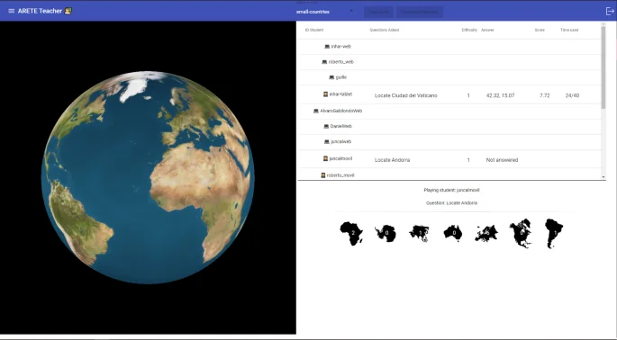
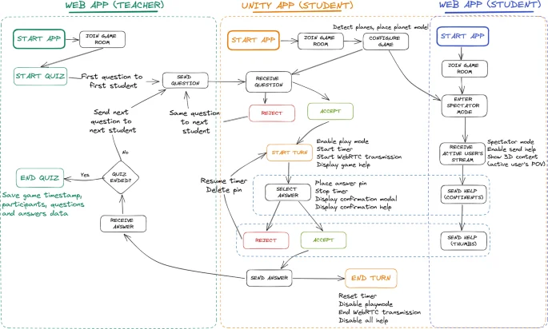

ARoundTheWorld is the culmination of my PhD research. Where the cleAR architecture paper established the infrastructure for building collaborative augmented reality applications in schools, this work demonstrates that infrastructure in a complete, evaluated product, tested with real students in real classrooms. It was published in Virtual Reality (Springer, 2024) and the findings were presented as part of my doctoral thesis defence in March 2024.
The application is a collaborative geography quiz. Once the teacher starts a session, the first student receives a question, for example "Where is Kyoto?", and must place a pin on a 3D globe of the Earth rendered in the augmented space. Other students participate in two ways: they can suggest a continent to help the active user, or place a semi-transparent hint marker directly on the globe. The student with the most correct answers wins. The quiz design deliberately mixes individual performance with group collaboration, giving every participant a meaningful role throughout the session.
Implementation
ARoundTheWorld is built on the design objectives (DOs) defined in the cleAR architecture. The architecture defines six DOs; for this evaluation, three of them, long-term storage, data visualisation and AI integration, were grouped into a single data-analytics objective, leaving the four below:
- DO1: Interoperability: the application runs on tablets and smartphones (iOS and Android) as a native AR app, and on laptops and desktops as a browser-based 3D experience, without degrading the collaborative experience.
- DO2: Multi-user capabilities: state is synchronised across all connected devices at 30 updates per second, with end-to-end latency consistently below 15 ms on both Wi-Fi and mobile networks.
- DO3: Data analytics: every student action generates an xAPI statement that is forwarded to a Learning Record Store (LRS) and integrated with the school's LMS, enabling automatic progress tracking without any manual export.
- DO4: Ease of development: the developer noted that the cleAR API handled all networking transparently, eliminating the need to deal with low-level sockets or platform-specific code.
A dedicated web interface allows teachers to compose new question sets. Geographical coordinates are resolved automatically via the Wikimedia API and questions are stored as plain JSON files, so new content can be added without touching application code.


Evaluation
The application was tested across three Basque secondary school classes: a group of 14-year-olds, a group of 17-year-olds, and a group of 19-year-olds. In total, 44 students and 3 teachers took part. Students were assigned either a tablet or a smartphone (players) or used the browser-based watcher interface, mirroring how devices are actually distributed in Basque classrooms.
| Group | Students | Tablets (players) | Smartphones (players) | Watchers |
|---|---|---|---|---|
| 14 year-olds | 17 | 4 | 5 | 8 |
| 17 year-olds | 17 | 3 | 6 | 8 |
| 19 year-olds | 10 | 3 | 6 | 1 |
After each session, students completed a 20-item questionnaire adapted from the Positive System Usability Scale (P-SUS), extended with questions specifically targeting the collaborative aspects of the application. Questions were grouped into four categories: interest in the application, quality of the user interface, effectiveness as a collaborative tool, and overall experience. Teachers were interviewed separately after the sessions.
Results
Every question except the first received a positive response ("Agree" or "Strongly agree") from more than 60% of students. The usability and collaborative questions scored particularly well.


Watchers gave a slightly higher mean score than players, though with greater variability, consistent with being less cognitively loaded during the quiz. Students using Apple devices (iPhone or iPad) rated the application marginally higher than those on Android or PC, but the difference was not statistically significant.

A Pearson correlation analysis between the number of in-app interactions and the questionnaire scores revealed a small but statistically significant positive correlation (p < 0.05): students who engaged more with the collaborative features rated the application more highly. A hierarchical clustering of active-user data in PCA space identified two main groups, one characterised by a high number of interactions and another by higher survey scores, suggesting that engagement and satisfaction, while correlated, capture different aspects of the experience.
Post-study teacher interviews confirmed that the collaborative capabilities and the ability to personalise content (creating their own question sets) were the two factors most likely to drive sustained adoption of AR in the classroom.
Context and Impact
The work was conducted as part of the ARETE project (Augmented Reality Interactive Educational System), funded under the EU Horizon 2020 programme (grant agreement No 856533). The evaluation results show that an application built on the cleAR architecture can fulfil all the design objectives identified by teachers, receive strong approval from students, and integrate into existing school infrastructure with minimal friction.
If there is one thing I took from this work, it is that the bottleneck for AR in schools is rarely the technology itself; it is the time teachers don't have to rebuild the same plumbing for every new application. Shared infrastructure that just works lets them focus on teaching instead.